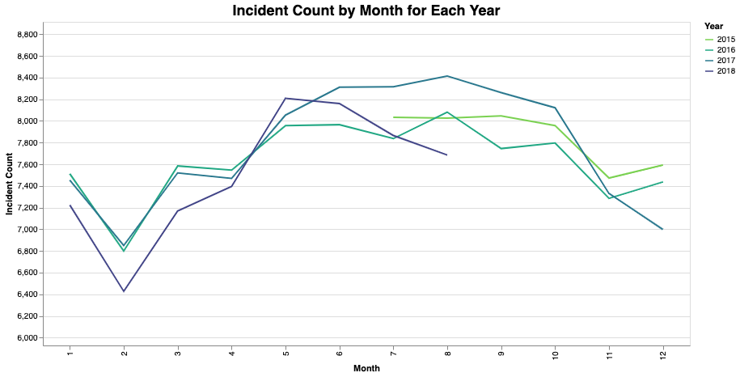
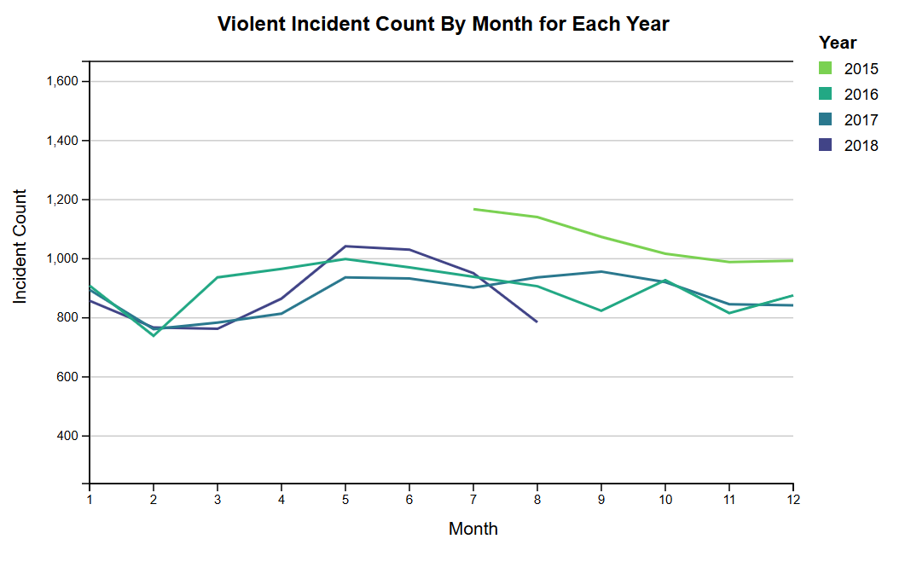
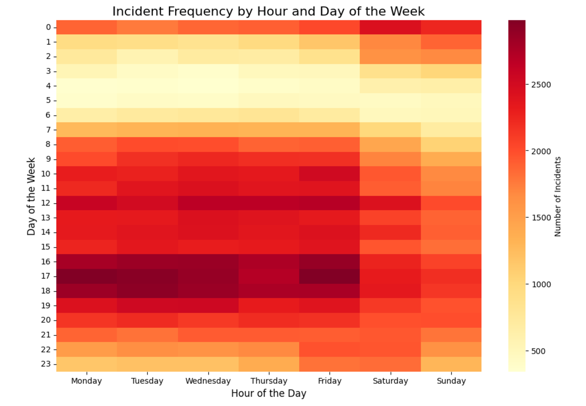
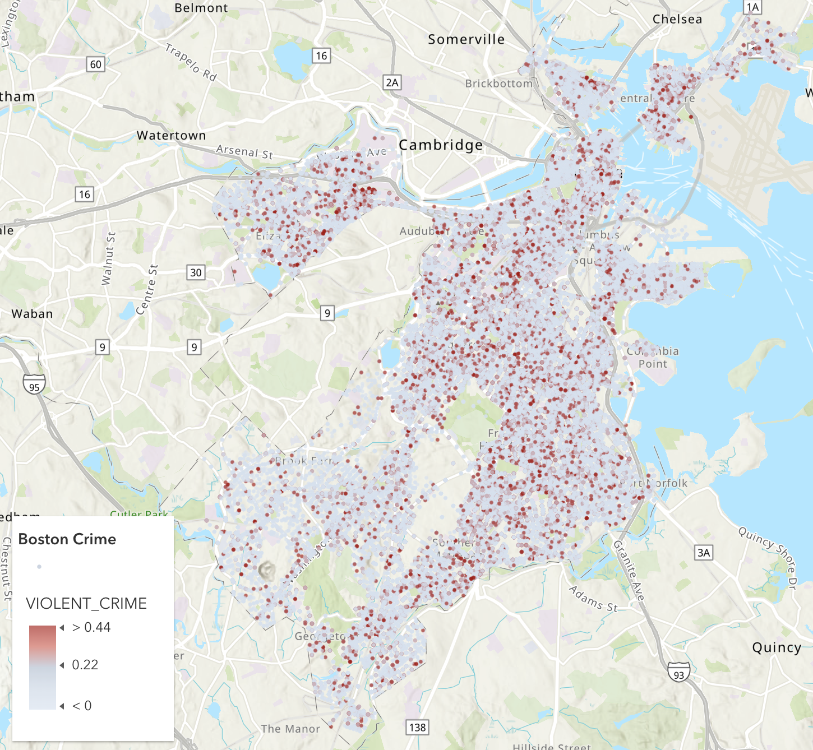

Data Overview
This data set sourced from Kaggle is provided by the Boston Police Department (BPD) through the Analyze Boston
organization to document initial details about incidents or crimes that occur in the city based on 911 calls
that are received by the organization. This data captures records from the new crime incident report system,
which includes certain attributes such as incident IDs, offense codes, district, time stamps, and more. There are
17 unique attributes including type of incident, date of occurrence, and district, and over 2000 records. Records
begin on June 14th, 2015 and go through September 3rd, 2018. We cleaned the data by removing the “shooting” column
which was null for all rows. We also added a column of 0’s and 1’s codifying each row as 0 if the crime was
non-violent, and 1 if it was violent. Lastly, we dropped all rows with null values to make sure the data was
comprehensive for each entry.
Static Visualizations
Visualizations of Incident Count by Month and Violent Incident Count by Month


The left-hand line graph depicts the number of incidents involving 911 calls/incidents warranting police presence throughout each month of multiple years
(2015-2018). Each line corresponds to a year of data, which ultimately allows for comparison of monthly trends across the years. It seems that there is a
peak in incidents and/or crime during the summer months, and a drop in incidents during the winter months, meaning there is a potential relationship between
weather and crime. It is worth noting that for 2015 and 2018, there are gaps in the data, meaning for these two years the data is incomplete. It seems that
the data started being collected in May of 2015, and data collection was completed in September of 2018.
The right-hand line chart, made using d3.js, depicts the total violent 911-reported crimes over the course of the year, for the years 2015 through 2018. This
visualization utilizes a channel of color to distinguish between each of the four years. This is depicted in the legend in the top right. This visualization
indicates that 2015 saw the largest spike in violent crimes reported via 911, which happened between June and July. This year, 2015, ended with the highest
number of reported violent crimes at around 1,000 reports. The years 2016 and 2017 were most similar in trends, seeing a positive slope, or increase, in violent
crimes between the months February and May. The year 2018 shows the steepest change between any two months over the years 2015 and 2018, dropping from around
780 reports to less than 100 reports. Although there is insufficient data reporting across all the years in this data, there is reason to believe that there
may be a trend between crimes and the time of year.
Contrasting the two line charts is helpful in understand the distribution of crime and violent crime. It is important to isolate which years have the most
violent crimes, and to see if this corresponds to the year with the most incidents in general. It is also a useful tool to see if the distributions between
incidents and violent incidents follow the same trend. In the left-hand line chart, incident count increases in the summer months and decreases during the
winter months. This distribution is unexpectedly untrue for the right-hand line chart, violent incidents peak from February to June. This implies that from
February to June, a higher proportion of total incidents are violent crimes. This information is useful because it can prompt the police department to
investigate why the proportion of violent crime is higher during these months.
Incident Frequency by Hour and Day of the Week

This heat map illustrates the frequency of different incidents by the hour of the day and day of the week. As shown in the colorbar, a darker and more
intense color signifies higher crime activities as denoted by 911 call data. The visualization explains that incidents are most frequent during the
first few days of the week, and that incidents are most likely to occur during the late afternoon or early evening. This indicates that 911 calls and
potential crimes are potentially tied to work schedules, as during the work week, especially during typical commute times, 911 calls and crimes are most
likely to occur. This visualization can help the Boston Police Department prepare for different times of day. More officers may need to be on call during
the week than on the weekends, especially during peak commuting times.
In this visualization, the mark is each rectangular area that represents a data cell based upon x-position (hour of day) and y-position (day of week).
The channel is color, since a colormap is used within each cell where more intensely warm colors represent a higher magnitude of incidents, while the
lighter and less intense shades represent a lower magnitude of incidents.
Incident Locations in Boston

This heat map illustrates the frequency of different incidents by the hour of the day and day of the week.
As shown in the colorbar, a darker and more intense color signifies higher crime activities as denoted by
911 call data. The visualization explains that incidents are most frequent during the first few days of the
week, and that incidents are most likely to occur during the late afternoon or early evening. This indicates
that 911 calls and potential crimes are potentially tied to work schedules, as during the work week, especially
during typical commute times, 911 calls and crimes are most likely to occur.
Summary and Future Work
Through the analysis of the "Crimes in Boston" dataset, valuable insights into the patterns and distribution of crimes and incidents in Boston, based on 911 call
data, were identified. The visualizations presented reveal both spatial and temporal trends, offering actionable insights for local law enforcement and city planners
to improve public safety and allocate resources effectively.
One key finding from the interactive "Top Crimes by District" graph is the variation in types of incidents across different districts. For instance, District D14
reports a higher frequency of motor vehicle accidents, while District A1 experiences elevated rates of larceny. These patterns provide a basis for targeted resource
allocation, such as prioritizing road safety improvements in District D14 and increasing police presence in District A1 to deter theft. Additionally, the “Incident
Frequency by Hour and Day of the Week” visualization highlights peaks in 911 call activity, such as larceny incidents during early evening hours and medical
assistance calls late at night. These findings suggest the need for heightened police readiness during these times to address the anticipated surge in reports.
The heatmap visualization emphasizes how crime frequency aligns with specific times of the day and week, showing peaks earlier in the week and later in the
afternoon and evening. This pattern may reflect the influence of work schedules and social dynamics on crime, suggesting a need for further investigation into
economic or social stressors that might contribute to these trends. Meanwhile, the scatterplot map of Boston provides a geographic perspective, pinpointing
high-crime areas and identifying zones that could benefit from increased patrols or enhanced public safety measures.
The total incident count line graph demonstrates clear seasonal trends over multiple years, with a surge in 911-reported incidents during warmer months and a
slight drop during colder months. This finding suggests a potential link between weather and crime rates, aligning with existing theories about increased outdoor
activity correlating with higher crime levels. The violent incident count line graph, created with D3.js, provides a focused analysis of violent crimes from 2015
to 2018. It shows year-by-year variations, with 2015 experiencing the largest spike in violent crime during summer months and maintaining the highest end-of-year
totals. While violent crime trends in 2016 and 2017 followed a similar seasonal trajectory, 2018 showed a notable decline in violent incidents, potentially reflecting
improved violence mitigation efforts or changes in reporting practices.
A comparison of the total incident count graph and the violent incident count graph reveals loosely shared seasonal trends, with both graphs peaking in the summer
and declining in winter. However, while total incident counts in 2015 do not show a significant spike despite an increase in 911 calls, the violent incident graph
highlights higher levels of violent crime during that year. This discrepancy suggests that the additional 911 calls in 2015 were largely related to non-violent
incidents or other factors, such as false alarms or public disturbances. This highlights that while violent crimes are a subset of total incidents, their trends
do not always mirror the broader pattern, underscoring the importance of analyzing incident types to identify the factors driving crime rates.
Future research should include expanding the dataset to cover additional years, enabling more comprehensive trend analysis and deeper insights into the long-term
dynamics of crime. Integrating socioeconomic and demographic data could provide context to the root causes of crime spikes, aiding policymakers in crafting targeted
interventions. Furthermore, developing advanced interactive tools, such as predictive crime models or real-time data visualizations, could enhance decision-making
for law enforcement and government agencies, helping them allocate resources more efficiently and address high-crime areas proactively.
Overall, the visualizations offer a robust understanding of crime patterns in Boston, supporting evidence-based strategies to improve public safety and optimize
resource management. As data collection improves and expands, these insights will become increasingly valuable in shaping effective policies and enhancing community
safety.